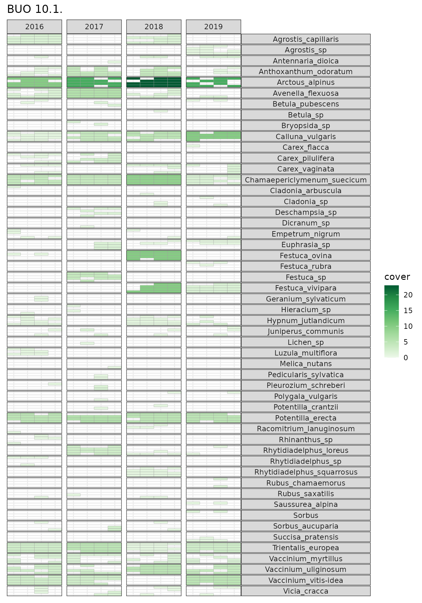
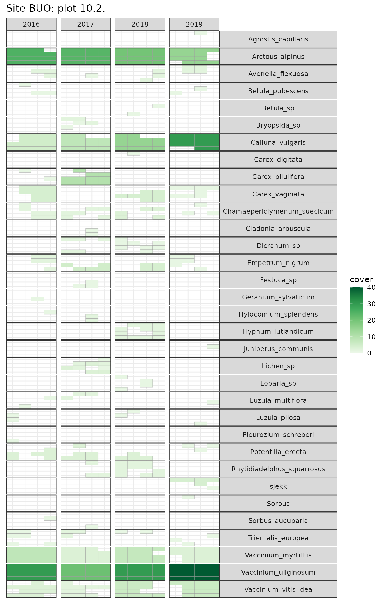

The Between the Fjords research group has several projects that repeatedly survey the vegetation composition of plots over several years. In any such dataset there are inevitably problems, such as synonynms, mis-identifications (sterile Carex are a particular problem), or accidental omissions.

We need to be able to identify these problems so we can try to correct them, but with over two hundred plots surveyed four or five times, each with about 20 taxa, it is a huge job.
To make the task easier, we developed turf-maps that plot each taxon per turf per year. Since other people probably have similar data, and would find our code useful, I’m going to show how we do it using some data from the LandPress project which studies how climate and land-use change affects biodiversity and natural resources in Norwegian coastal heathlands.
For each 1m2 turf, vegetation cover is estimated on a percent scale, and presence/absence is recorded on a 4 x 4 sub-turf grid and reported in columns freq1–freq16. A sample of the data is included in the package
| site | year | plot | species | cover | freq1 | freq2 | freq3 | freq4 | freq5 |
|---|---|---|---|---|---|---|---|---|---|
| BUO | 2016 | 10.1. | Calluna_vulgaris | 1 | 1 | 0 | 1 | 1 | 1 |
| BUO | 2016 | 10.1. | Arctous_alpinus | 10 | 1 | 1 | 1 | 1 | 0 |
| BUO | 2016 | 10.1. | Trientalis_europea | 3 | 1 | 1 | 1 | 1 | 1 |
| BUO | 2016 | 10.1. | Avenella_flexuosa | 2 | 1 | 0 | 1 | 1 | 0 |
| BUO | 2016 | 10.1. | Vaccinium_vitis-idea | 3 | 1 | 1 | 0 | 1 | 1 |
| BUO | 2016 | 10.1. | Potentilla_erecta | 5 | 1 | 1 | 0 | 1 | 1 |
We need to reformat the data with tidyr::pivot_longer()
to make put it into a long format suitable for plotting (see this
post) for more about pivot_longer()).
heath_long <- heath |>
pivot_longer(
cols = matches("^freq\\d+$"), # subplot presence-absence columns
names_to = "subturf",
values_to = "presence",
names_prefix = "freq",
names_transform = list(subturf = as.integer)
) |>
filter(presence != "0") # only want presences
# first few columns
heath_long |>
head() |>
knitr::kable()| site | year | plot | species | cover | subturf | presence |
|---|---|---|---|---|---|---|
| BUO | 2016 | 10.1. | Calluna_vulgaris | 1 | 1 | 1 |
| BUO | 2016 | 10.1. | Calluna_vulgaris | 1 | 3 | 1 |
| BUO | 2016 | 10.1. | Calluna_vulgaris | 1 | 4 | 1 |
| BUO | 2016 | 10.1. | Calluna_vulgaris | 1 | 5 | 1 |
| BUO | 2016 | 10.1. | Calluna_vulgaris | 1 | 6 | 1 |
| BUO | 2016 | 10.1. | Calluna_vulgaris | 1 | 7 | 1 |
The subturfs are counted from top-left of the turf like the words on
a page. We need to map these onto row/column positions so we can plot
them with make_grid().
grid <- make_grid(ncol = 4)
plot_subturf_grid(grid_long = grid)make_turf_plot() will plot the data from one turf over
time. It is wrapped in an anonymous function so that the site and plot
name can be added as a title.
heath_long |>
filter(plot == "10.1.") |>
make_turf_plot(
data = _,
year = year, species = species, cover = cover, subturf = subturf,
grid_long = grid,
site_id = site,
turf_id = plot
)
There are a few things than need checking here, for example, Agrostis capillaris vs. Agrostis sp, Festuca, and Rhytidiadelphus.
No subturf data?
If there are no subturf data, you can still use
make_turf_plot. We just don’t set the subturf
and grid_long arguments.
make_turf_plot(
data = heath,
year = year,
species = species,
cover = cover,
site_id = site,
turf_id = plot
)Multiple Subturf maps
There are lots of turfs, and I want to be able to print them all at
once which I can do using purrr::pmap() to iterate over the
data using make_turf_plot().
x <- heath_long |>
# sort
arrange(site, plot) |>
group_by(site, plot) |>
nest() |>
pmap(.f = \(site, plot, data){
make_turf_plot(
data = data,
year = year, species = species, cover = cover, subturf = subturf,
title = glue::glue("Site {site}: plot {plot}"),
grid_long = grid
)
}) |>
walk(print) # print all maps
If the plots aren’t large enough, change fig.height in
the chunk options.